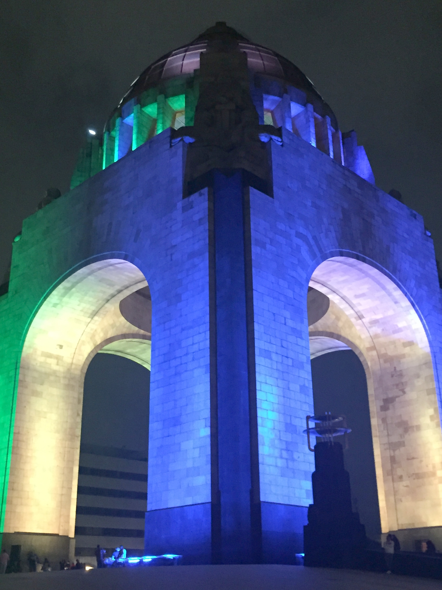

Non-associative algebra and Lie theory, Mexico City, February 27 - March 3, 2017

|
This conference is dedicated to non-associative algebra and its connections to differential geometry and Lie theory. It is the third event with this title; the two previous events took place in Oaxaca in 2013 and 2015.
Local organising committee:
- Vladimir Dotsenko (CINVESTAV-IPN)
- Jacob Mostovoy (CINVESTAV-IPN)
- Liudmila Sabinina (UAEM)
|
Participants
The following mathematicians expressed their interest in participating in the event as of February 21, 2017 (please fill in the registration form below to be added to the list):
- Murray Bremner
- Bruno Cisneros de la Cruz
- Matthew Dawson
- Vladimir Dotsenko
- Askar Dzhumadil'daev
- Vyacheslav Futorny
- Alexander Grishkov
- Isabel Hernández
- Cristhian Hidber
- Jessamyn Infante Macotela
- Natalia Iyudu
- Dmitri Kaledin
- Iryna Kashuba
|
- Ernesto Lupercio
- Martin Markl
- Olivier Mathieu
- Elias Mochan
- Jacob Mostovoy
- Zbigniew Oziewicz
- José-Antonio de la Peña
- Jesús Rogelio Pérez Buendía
- Michael Polyak
- Yulieth Prieto Montañez
- Raúl Quiroga-Barranco
- Ángel Ríos
- Manuel Rivera
- Eli Roblero
|
- María del Carmen Rodríguez Vallarte
- Christopher Jonatan Roque Marquez
- Maria Ronco
- Liudmila Sabinina
- Adolfo Sánchez Valenzuela
- Yakov Savelyev
- Larissa Sbitneva
- Carlos Segovia
- Ivan Shestakov
- Mark Spivakovsky
- Alexander Stolin
- German Vera
- Gregor Weingart
- James Wilson
|
Registration
To facilitate the necessary arrangements, we request the participants to register before February 20 (and as soon as possible in general). The registration form is available through the http URL
http://tinyurl.com/Nonassociative2017.